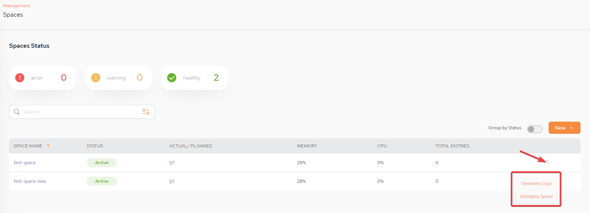
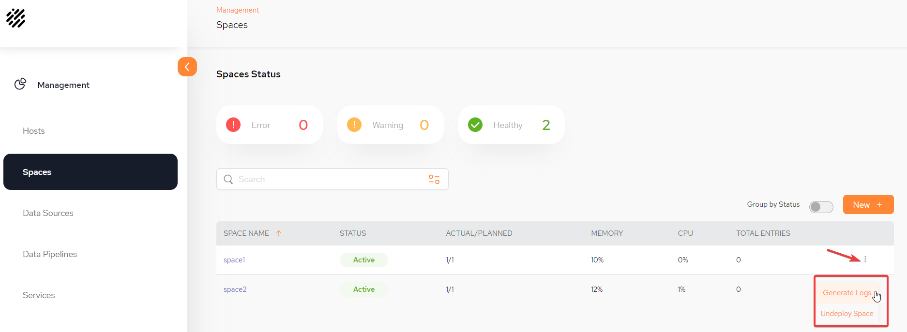
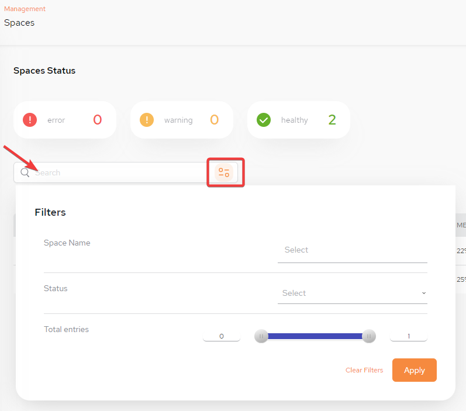

SpaceDeck is now secure. Refer to
The Spaces main screen displays the GigaSpaces


Spaces Status – Possible values are –
Error - Connectivity issues/actual is not equal to planned/instance is down/ memory utilization is more than 90%
Warning - Memory usage is above 75%, actual is equal to planned, no connectivity issues
Healthy - Actual is equal to planned, no connectivity issues and memory utilization is less than 75%
Group by Status – Toggle to show the Spaces grouped by status
New + – Click this to configure a new Space
SPACE NAME – The name of the GigaSpaces Space object
STATUS – One of the following conditions: Active, Warning, Error
ACTUAL/PLANNED – Actual topology relative to planned instances. Note that actual is less than planned if not enough hosts are available for planned primary and backup partitions.
MEMORY – Percentage of memory used by the Space
CPU - Percentage of CPU used by the Space
TOTAL ENTRIES – Number of rows of data in the Space
Search It is also possible to filter a search. Once the filters are set, click Apply:

Once the Space Status is Active, the kebab menu on the far right can be used to either Generate Logs or Undeploy Space.
For more information: